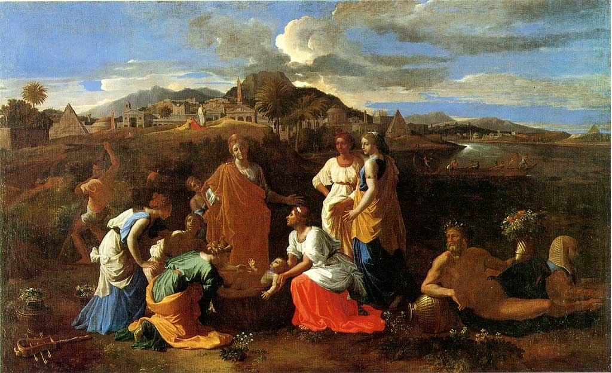

<head>
<meta charset="UTF-8" />
<meta name="keywords" content="drawing, painting" />
<meta name="description" content="drawings by Sunjy" />
<title>Sunjy</title>
<link rel="shortcut icon" type="image/x-icon" href="../../mImages/mCommon/favicon.ico" media="screen" />
<link rel="stylesheet" type="text/css" href="../../mCsses/mCommon/mCssA.css" />
<link rel="stylesheet" type="text/css" href="../../mCsses/mCommon/mCssB.css" />
<link rel="stylesheet" type="text/css" href="../../mCsses/mCommon/mCssC.css" />
<link rel="stylesheet" type="text/css" href="../../mCsses/mCommon/mCssD.css" />
<link rel="stylesheet" type="text/css" href="../../mCsses/mContent/mCssA.css" />
<link rel="stylesheet" type="text/css" href="../../mCsses/mContent/mCssB.css" />
<link rel="stylesheet" type="text/css" href="../../mCsses/mContent/mCssC.css" />
<link rel="stylesheet" type="text/css" href="../../mCsses/mContent/mCssD.css" />
</head>
<script type="text/javascript" src="../../mScripts/mContent/mContentAA.js" /></script>
<script type="text/javascript" src="../../mScripts/mContent/mContentAB.js" /></script>
<script type="text/javascript" src="../../mScripts/mContent/mContentAC.js" /></script>
<script type="text/javascript" src="../../mScripts/mContent/mContentAD.js" /></script>
<script type="text/javascript"></script> 
<script type="text/javascript">
document.write('<div class="mImgAbsolute"></div>');
/*
document.write('<p class="mFontSizeBColor" />From a white paper...</p>');
document.write('<table class="center"><tr><td>');
document.write('');
document.write('</td></tr></table>');
*/
</script>


<script type="text/javascript">
document.write('<p class="mFontSizeBColor" />Moses saved from the Waters</p>');
document.write('<p class="mFontSizeSColor" />“Moses saved from the Waters” by Nicolas Poussin depicts figures wearing the 17th-century idea of the ancient Egyptian dress, and the background includes pyramids and obelisks, where previously most artists had not attempted to represent a specifically Egyptian setting. The 17th century saw the height of popularity for this biblical subject, with Poussin painting it at least three times.<br><br>The three versions by Poussin all include a Roman-style Nilus, the god, or personification of the Nile, reclining with a cornucopia. This version shows the god next to a sphinx in the foreground. The sphinx was a copy of a specific classical statue in the Vatican. The background includes a hippopotamus hunt on the river in the adapted from the Roman Nile mosaic.<br></p>');
document.write('<table class="center" /><tr><td>');
document.write('<br>The three versions by Poussin all include a Roman-style Nilus, the god, or personification of the Nile, reclining with a cornucopia. This version shows the god next to a sphinx in the foreground. The sphinx was a copy of a specific classical statue in the Vatican. The background includes a hippopotamus hunt on the river in the adapted from the Roman Nile mosaic.<br>" />');
document.write('</td></tr></table>');
</script>


